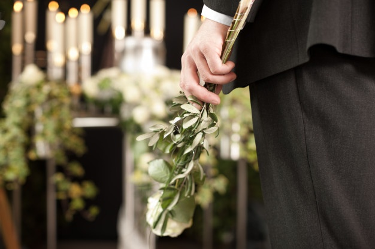
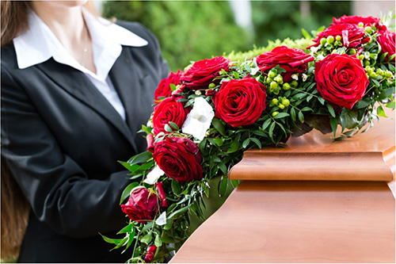
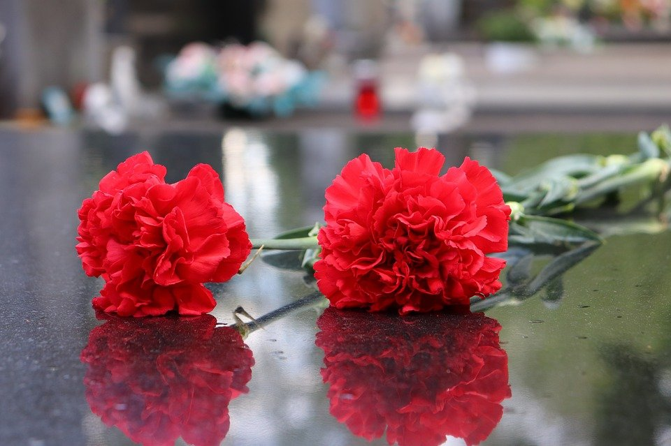
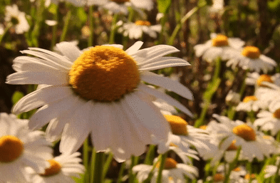
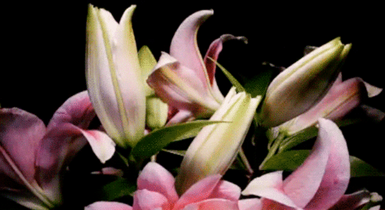
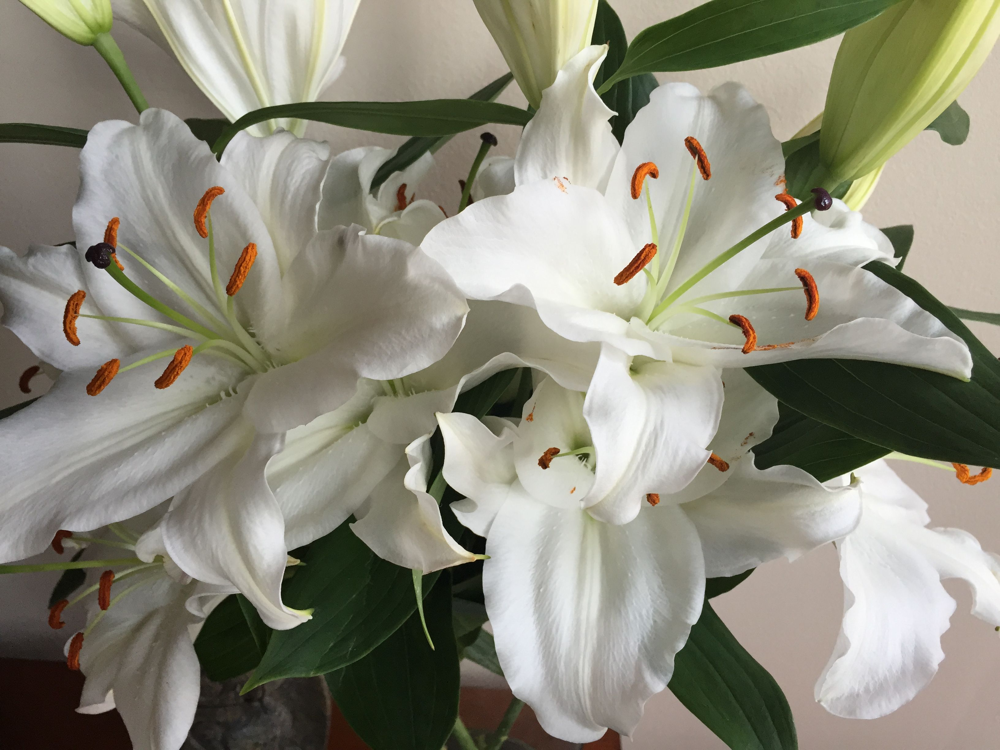
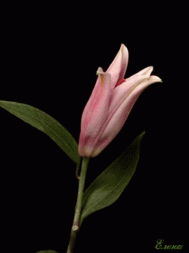

Las flores nos acompañan en muchos de los momentos más felices de nuestra vida. Pero también protagonizan los días más tristes, cuando tenemos que despedir a alguien. Las flores nos sirven para mostrar cariño, agradecimiento y apoyo ante la pérdida de un ser querido. Hoy te hablamos de cómo elegir las flores para un funeral, esas flores que nos ayudan a trasladar sentimientos y apoyo hacia la familia de la persona fallecida. En Interflora dispones de una amplia variedad de flores para hacer llegar tus condolencias y también de tipos de composiciones florales. Descubre algunos consejos para escoger las flores acertadas y algunas ideas para escribir mensajes o dedicatorias en una corona fúnebre.
Enviar flores es una forma común de expresar condolencias a la familia de una persona fallecida. Las flores, usadas para ungir a los muertos en tiempos antiguos y hoy en día para adornar el ataúd o el sitio de entierro, buscan consolar a aquellos que se lamentan y sirven como un recordatorio del espíritu en vida. Enviar flores es una manera maravillosa de mostrar respeto y transmitir tus condolencias. Las flores que envíes ayudarán a celebrar la vida, dar consuelo y subir los ánimos de los parientes del fallecido.
La primera parte del proceso tiene que ver con elegir las flores y para ello es bueno tener en cuenta una serie de consideraciones antes de hacer tu eleccion para enviar flores.
Algunos anuncios en funerales dicen "en lugar de flores…" y piden una donación para una caridad favorita o un motivo personal. Algunas personas eligen enviar flores además de hacer una donación. Esta decisión depende de ti, pero si tienes dudas, siempre se aprecia respetar los deseos de la familia.
Los arreglos florales más apropiados pueden variar según la fe, creencias culturales o tradiciones religiosas del fallecido y su familia. Lo que es apropiado en una cultura podría no serlo en otra, así que es importante considerar esto antes de comprar flores para un funeral. Aquí hay algunas sugerencias para las afiliaciones religiosas más comunes:
Si bien no hay una regla estricta o rápida con respecto a los tipos de flores que se deben enviar a los funerales o a las casas de los deudos, hay muchas flores que son favoritas por tradición. Aquí hay algunas sugerencias de flores con significados que podrían ser apropiadas para el ambiente del funeral:
En los funerales se suelen utilizar en color blanco, rosa y rojo. Con un ramo de rosas en color rosa podrás expresar aprecio y agradecimiento a la persona fallecida y a sus familiares. La rosa roja siempre es símbolo de amor y respeto, incluso ante la pérdida de una persona.
 Junto a la rosa, es la flor más utilizada en la ornamentación de un funeral. En ramos, coronas y centros, con el clavel expresas tu admiración por el difunto y haces saber lo que significó para ti. El clavel es el protagonista de esta corona.
Símbolo de pureza y lealtad, las margaritas forman parte de composiciones fúnebres que indican un nuevo comienzo y también de homenaje a la persona fallecida. Este centro vertical de margaritas y gladiolos es buen ejemplo.
La elegancia del lilium también está presente en las flores en los momentos de duelo. Una manera de expresar las condolencias que simboliza también la inocencia del alma eterna. Ir al inicio
  
Tipos de arreglos florales funerarios
La pasta alla zozzona es un plato tradicional de Castelli Romani, una zona agraria situada al sureste de la capital italiana, con una gran cabaña de ganado porcino. No es de extrañar, por tanto, que a alguien se le ocurriera mezclar dos de las grandes pastas de la zona, la carbonara y la amatriciana, y echarle además salchichas.